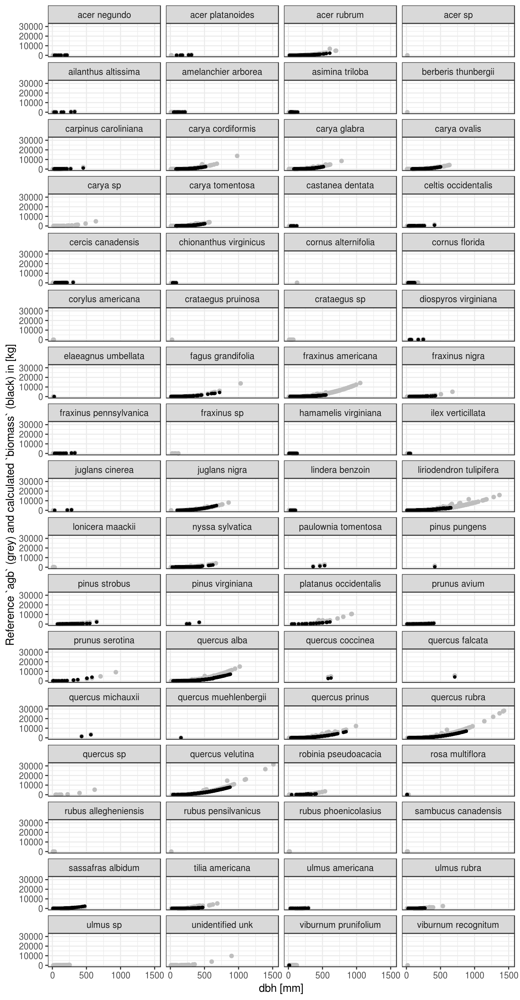
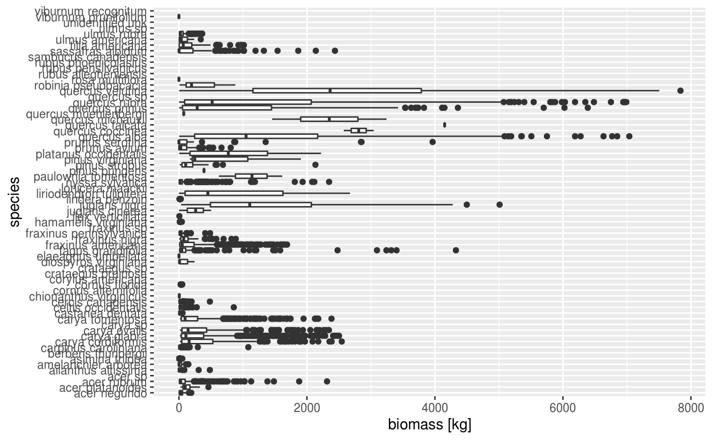
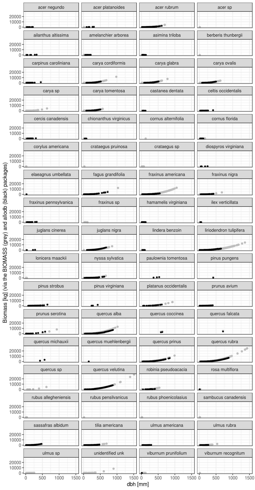

Calculate biomass
Calculate biomassThe goal of fgeo.biomass is to calculate biomass using ForestGEO data and equations from either the BIOMASS package or the allodb package.
The BIOMASS package is applicable to tropical forests. It was first published on CRAN in 2016 and on Methods on Ecology and Evolution in 2017. fgeo.biomass provides the main features of BIOMASS with a simpler interface, consistent with all fgeo packages.
The allodb package is work in progress, and aims to provide expert-selected allometric equations, both for tropical and temperate forests. fgeo.biomass provides a simple interface to automate the process of finding the right equation(s) for each stem and computing biomass.
Installation
Install the development version of fgeo.biomass with:
# install.packages("devtools")
devtools::install_github("forestgeo/fgeo.biomass")Setup
In addition to the fgeo.biomass package we will use dplyr and ggplot2 for data wrangling and plotting.
fgeo.biomass wrapping BIOMASS
We’ll use data from the Barro Colorado Island, Panama (BCI). We first pick alive trees and drop missing dbh values as we can’t calculate biomass for them.
bci_tree <- as_tibble(bciex::bci12t7mini) %>%
filter(status == "A", !is.na(dbh))
bci_tree
#> # A tibble: 538 x 20
#> treeID stemID tag StemTag sp quadrat gx gy MeasureID CensusID
#> <int> <int> <chr> <chr> <chr> <chr> <dbl> <dbl> <int> <int>
#> 1 858 1 0008… "" apei… 4402 899. 42 766 171
#> 2 1129 1 0011… "" quar… 4308 867. 163. 995 171
#> 3 2143 1 0021… "" beil… 3715 744 305. 1829 171
#> 4 2388 10 0023… 1 lueh… 3622 724. 447. 2007 171
#> 5 4448 1 0044… "" sima… 2321 477. 428. 3741 171
#> 6 5877 1 0059… "" quar… 1303 280. 70.4 4800 171
#> 7 6487 1 0065… "" alse… 1108 221. 178. 5226 171
#> 8 8651 1 0105… "" hyba… 4811 974. 228. 6832 171
#> 9 9480 1 0114… "" fara… 4814 977. 290 7373 171
#> 10 10179 11 0121… <NA> hyba… 4819 979. 395. 7898 171
#> # … with 528 more rows, and 10 more variables: dbh <dbl>, pom <chr>,
#> # hom <dbl>, ExactDate <chr>, DFstatus <chr>, codes <chr>,
#> # nostems <dbl>, date <dbl>, status <chr>, agb <dbl>We also need species data.
bci_species <- as_tibble(bciex::bci_species)
bci_species
#> # A tibble: 1,414 x 13
#> sp Latin Genus Species Family SpeciesID SubspeciesID Authority
#> <chr> <chr> <chr> <chr> <chr> <int> <int> <chr>
#> 1 call… Call… Call… laxa Fabac… 131 1 (Benth.)…
#> 2 pout… Pout… Pout… glomer… Sapot… 811 2 (Miq.) R…
#> 3 pout… Pout… Pout… glomer… Sapot… 811 3 (Miq.) R…
#> 4 prot… Prot… Prot… tenuif… Burse… 828 4 (I.M. Jo…
#> 5 soro… Soro… Soro… pubive… Morac… 959 5 Hensl.
#> 6 soro… Soro… Soro… pubive… Morac… 959 6 Hensl.
#> 7 swar… Swar… Swar… simplex Fabac… 980 7 (Raddi) …
#> 8 hibi… Tali… Tali… tiliac… Malva… 997 9 (Arruda)…
#> 9 quar… Quar… Quar… astero… Malva… 871 10 (Pittier…
#> 10 inga… Inga… Inga ciliata Fabac… 1278 11 T.D.Penn.
#> # … with 1,404 more rows, and 5 more variables: IDLevel <chr>, syn <chr>,
#> # subsp <chr>, wsg <dbl>, wsglevel <chr>add_tropical_biomass() adds biomass to your census data.
biomass <- add_tropical_biomass(bci_tree, bci_species)
#> ✔ Guessing dbh in [mm].
#> ℹ You may provide the dbh unit manually via the argument`dbh_unit`.
#> ℹ Wood density given in [g/cm^3].
#> ✔ Using 'Pantropical' `region`.
#> ℹ Biomass is given in [kg].
#> ✔ Adding new columns:
#> family, genus, species, wd_level, wd_mean, wd_sd, biomass
biomass
#> # A tibble: 538 x 27
#> treeID stemID tag StemTag sp quadrat gx gy MeasureID CensusID
#> <int> <int> <chr> <chr> <chr> <chr> <dbl> <dbl> <int> <int>
#> 1 858 1 0008… "" apei… 4402 899. 42 766 171
#> 2 1129 1 0011… "" quar… 4308 867. 163. 995 171
#> 3 2143 1 0021… "" beil… 3715 744 305. 1829 171
#> 4 2388 10 0023… 1 lueh… 3622 724. 447. 2007 171
#> 5 4448 1 0044… "" sima… 2321 477. 428. 3741 171
#> 6 5877 1 0059… "" quar… 1303 280. 70.4 4800 171
#> 7 6487 1 0065… "" alse… 1108 221. 178. 5226 171
#> 8 8651 1 0105… "" hyba… 4811 974. 228. 6832 171
#> 9 9480 1 0114… "" fara… 4814 977. 290 7373 171
#> 10 10179 11 0121… <NA> hyba… 4819 979. 395. 7898 171
#> # … with 528 more rows, and 17 more variables: dbh <dbl>, pom <chr>,
#> # hom <dbl>, ExactDate <chr>, DFstatus <chr>, codes <chr>,
#> # nostems <dbl>, date <dbl>, status <chr>, agb <dbl>, family <chr>,
#> # genus <chr>, species <chr>, wd_level <chr>, wd_mean <dbl>,
#> # wd_sd <dbl>, biomass <dbl>You may also provide a specific region or latitude and longitude.
biomass <- add_tropical_biomass(
bci_tree,
bci_species,
latitude = 9.154965,
longitude = -79.845884
)
#> ✔ Guessing dbh in [mm].
#> ℹ You may provide the dbh unit manually via the argument`dbh_unit`.
#> ℹ Wood density given in [g/cm^3].
#> ✔ Using `latitude` and `longitude` (ignoring `region`).
#> ℹ Biomass is given in [kg].
#> ✔ Adding new columns:
#> family, genus, species, wd_level, wd_mean, wd_sd, latitude, longitude, biomass
biomass %>%
select(biomass, everything())
#> # A tibble: 538 x 29
#> biomass treeID stemID tag StemTag sp quadrat gx gy MeasureID
#> <dbl> <int> <int> <chr> <chr> <chr> <chr> <dbl> <dbl> <int>
#> 1 2397. 858 1 0008… "" apei… 4402 899. 42 766
#> 2 1884. 1129 1 0011… "" quar… 4308 867. 163. 995
#> 3 264. 2143 1 0021… "" beil… 3715 744 305. 1829
#> 4 911. 2388 10 0023… 1 lueh… 3622 724. 447. 2007
#> 5 961. 4448 1 0044… "" sima… 2321 477. 428. 3741
#> 6 2473. 5877 1 0059… "" quar… 1303 280. 70.4 4800
#> 7 570. 6487 1 0065… "" alse… 1108 221. 178. 5226
#> 8 2.12 8651 1 0105… "" hyba… 4811 974. 228. 6832
#> 9 16.0 9480 1 0114… "" fara… 4814 977. 290 7373
#> 10 2.49 10179 11 0121… <NA> hyba… 4819 979. 395. 7898
#> # … with 528 more rows, and 19 more variables: CensusID <int>, dbh <dbl>,
#> # pom <chr>, hom <dbl>, ExactDate <chr>, DFstatus <chr>, codes <chr>,
#> # nostems <dbl>, date <dbl>, status <chr>, agb <dbl>, family <chr>,
#> # genus <chr>, species <chr>, wd_level <chr>, wd_mean <dbl>,
#> # wd_sd <dbl>, latitude <dbl>, longitude <dbl>propagate_errors() allows you to propagate errors.
str(
propagate_errors(biomass)
)
#> ✔ Propagating errors on measurements of wood density.
#> List of 5
#> $ meanAGB : num 20.9
#> $ medAGB : num 20.6
#> $ sdAGB : num 2.32
#> $ credibilityAGB: Named num [1:2] 16.8 26.2
#> ..- attr(*, "names")= chr [1:2] "2.5%" "97.5%"
#> $ AGB_simu : num [1:538, 1:1000] 1.49 1.907 0.219 1.487 1.125 ...
#> ..- attr(*, "dimnames")=List of 2
#> .. ..$ : NULL
#> .. ..$ : chr [1:1000] "203" "817" "977" "933" ...model_height() allows you to create a height model, which you can use to propagate height errors. This is what the entire pipeline looks like:
model <- model_height(bci_tree)
#> ℹ Using `method` log1 (other methods: log2, weibull, michaelis).
errors <- bci_tree %>%
add_tropical_biomass(bci_species) %>%
propagate_errors(height_model = model)
#> ✔ Guessing dbh in [mm].
#> ℹ You may provide the dbh unit manually via the argument`dbh_unit`.
#> ℹ Wood density given in [g/cm^3].
#> ✔ Using 'Pantropical' `region`.
#> ℹ Biomass is given in [kg].
#> ✔ Adding new columns:
#> family, genus, species, wd_level, wd_mean, wd_sd, biomass
#> ✔ Propagating errors on measurements of wood density.
#> ✔ Propagating errors on measurements of height.
str(errors)
#> List of 5
#> $ meanAGB : num 21.6
#> $ medAGB : num 21.4
#> $ sdAGB : num 2.09
#> $ credibilityAGB: Named num [1:2] 18.1 26.2
#> ..- attr(*, "names")= chr [1:2] "2.5%" "97.5%"
#> $ AGB_simu : num [1:538, 1:1000] 2.506 0.881 0.376 1.277 1.019 ...If you pass latitude and longitude to add_tropical_biomass(), and then you pass aheight_modeltopropagate_errors()`, then you will need to ignore the coordinates. On an interactive session, you should see something like this:

if (interactive()) {
errors <- bci_tree %>%
add_tropical_biomass(
bci_species,
latitude = 9.154965,
longitude = -79.845884
) %>%
propagate_errors(height_model = model)
str(errors)
}add_wood_density() adds wood density to your census data. It is not limited to tropical forests, and has support for all of these regions: AfricaExtraTrop, AfricaTrop, Australia, AustraliaTrop, CentralAmericaTrop, China, Europe, India, Madagascar, Mexico, NorthAmerica, Oceania, SouthEastAsia, SouthEastAsiaTrop, SouthAmericaExtraTrop, SouthAmericaTrop, and World.
wood_density <- add_wood_density(bci_tree, bci_species)
#> ℹ Wood density given in [g/cm^3].
wood_density %>%
select(starts_with("wd_"), everything())
#> # A tibble: 538 x 26
#> wd_level wd_mean wd_sd treeID stemID tag StemTag sp quadrat gx
#> <chr> <dbl> <dbl> <int> <int> <chr> <chr> <chr> <chr> <dbl>
#> 1 genus 0.255 0.0941 858 1 0008… "" apei… 4402 899.
#> 2 species 0.454 0.0708 1129 1 0011… "" quar… 4308 867.
#> 3 genus 0.563 0.0941 2143 1 0021… "" beil… 3715 744
#> 4 species 0.417 0.0708 2388 10 0023… 1 lueh… 3622 724.
#> 5 species 0.383 0.0708 4448 1 0044… "" sima… 2321 477.
#> 6 species 0.454 0.0708 5877 1 0059… "" quar… 1303 280.
#> 7 species 0.536 0.0708 6487 1 0065… "" alse… 1108 221.
#> 8 species 0.67 0.0708 8651 1 0105… "" hyba… 4811 974.
#> 9 species 0.584 0.0708 9480 1 0114… "" fara… 4814 977.
#> 10 species 0.67 0.0708 10179 11 0121… <NA> hyba… 4819 979.
#> # … with 528 more rows, and 16 more variables: gy <dbl>, MeasureID <int>,
#> # CensusID <int>, dbh <dbl>, pom <chr>, hom <dbl>, ExactDate <chr>,
#> # DFstatus <chr>, codes <chr>, nostems <dbl>, date <dbl>, status <chr>,
#> # agb <dbl>, family <chr>, genus <chr>, species <chr>The BIOMASS package provides a tool to correct taxonomic names. fgeo.biomass does not include that feature. You may use BIOMASS directly or the more focused taxize package.
Warning
These features are not ready for research. We are now building a Minimum Viable Product, with just enough features to collect feedback from alpha users and redirect our effort. The resulting biomass is still meaningless.
We’ll use the add_biomass() with these inputs:
- A ForestGEO-like stem or tree table.
- A species table (internally used to look up the Latin species names from the species codes in the
spcolumn of the census table).
We’ll use data from the Smithsonian Conservation Biology Institute, USA (SCBI). We first pick alive trees and drop missing dbh values as we can’t calculate biomass for them.
census <- fgeo.biomass::scbi_tree1 %>%
filter(status == "A", !is.na(dbh))
census
#> # A tibble: 30,050 x 20
#> treeID stemID tag StemTag sp quadrat gx gy DBHID CensusID
#> <int> <int> <chr> <chr> <chr> <chr> <dbl> <dbl> <int> <int>
#> 1 1 1 10079 1 libe 0104 3.70 73 1 1
#> 2 2 2 10168 1 libe 0103 17.3 58.9 3 1
#> 3 3 3 10567 1 libe 0110 9 197. 5 1
#> 4 4 4 12165 1 nysy 0122 14.2 428. 7 1
#> 5 5 5 12190 1 havi 0122 9.40 436. 9 1
#> 6 6 6 12192 1 havi 0122 1.30 434 13 1
#> 7 8 8 12261 1 libe 0125 18 484. 17 1
#> 8 9 9 12456 1 vipr 0130 18 598. 19 1
#> 9 10 10 12551 1 astr 0132 5.60 628. 22 1
#> 10 11 11 12608 1 astr 0132 13.3 623. 24 1
#> # … with 30,040 more rows, and 10 more variables: dbh <dbl>, pom <chr>,
#> # hom <dbl>, ExactDate <chr>, DFstatus <chr>, codes <chr>,
#> # nostems <dbl>, date <dbl>, status <chr>, agb <dbl>We now use add_biomass() to add biomass to our census dataset.
species <- fgeo.biomass::scbi_species
with_biomass <- census %>%
add_biomass(species, site = "SCBI")
#> ✔ Guessing dbh in [mm].
#> ℹ You may provide the dbh unit manually via the argument`dbh_unit`.
#> ℹ biomass values are given in [kg].
#> ✔ Guessing dbh in [mm].
#> ℹ You may provide the dbh unit manually via the argument`dbh_unit`.
#> ✔ Matching equations by site and species.
#> ✔ Refining equations according to dbh.
#> ✔ Using generic equations where expert equations can't be found.
#> Warning: Can't find equations matching these species:
#> acer sp, carya sp, crataegus sp, fraxinus sp, quercus sp, ulmus sp, unidentified unk
#> Warning: Can't find equations for 15028 rows (inserting `NA`).
#> Warning: Detected a single stem per tree. Do you need a multi-stem table?
#> Warning: * For trees, `biomass` is that of the main stem.
#> Warning: * For shrubs, `biomass` is that of the entire shrub.
#> ✔ Adding new columns:
#> rowid, species, site, biomassWe are warned that we are using a tree-table (as opposed to a stem-table), and informed about how to interpret the resulting biomass values for trees and shrubs.
Some equations couldn’t be found. There may be two reasons:
- Some stems in the data belong to species with no matching species in allodb.
- Some stems in the data belong to species that do match species in allodb but the available equations were designed for a dbh range that doesn’t include actual dbh values in the data.
Here are the most interesting columns of the result:
with_biomass %>%
select(treeID, species, biomass)
#> # A tibble: 30,050 x 3
#> treeID species biomass
#> <int> <chr> <dbl>
#> 1 1 lindera benzoin NA
#> 2 2 lindera benzoin NA
#> 3 3 lindera benzoin NA
#> 4 4 nyssa sylvatica 58.5
#> 5 5 hamamelis virginiana 17.6
#> 6 6 hamamelis virginiana 0.400
#> 7 8 lindera benzoin 5.69
#> 8 9 viburnum prunifolium NA
#> 9 10 asimina triloba NA
#> 10 11 asimina triloba NA
#> # … with 30,040 more rowsLet’s now visualize the relationship between dbh and bbiomass by species (black points), in comparison with agb (above ground biomass) values calculated with allometric equations for tropical trees (grey points).
with_biomass %>%
# Convert agb from [Mg] to [kg]
mutate(agb_kg = agb * 1e3) %>%
ggplot(aes(x = dbh)) +
geom_point(aes(y = agb_kg), size = 1.5, color = "grey") +
geom_point(aes(y = biomass), size = 1, color = "black") +
facet_wrap("species", ncol = 4) +
ylab("Reference `agb` (grey) and calculated `biomass` (black) in [kg]") +
xlab("dbh [mm]") +
theme_bw()
#> Warning: Removed 15028 rows containing missing values (geom_point).
Above, the species for which biomass couldn’t be calculated show no black points, although they do show grey reference-points.
To better understand the distribution of biomass values for each species we can use a box-plot.
with_biomass %>%
ggplot(aes(species, biomass)) +
geom_boxplot() +
ylab("biomass [kg]") +
coord_flip()
#> Warning: Removed 15028 rows containing non-finite values (stat_boxplot).
For some species the maximum dbh for which biomass was calculated is much lower than the maximum dbh value for which the reference agb was calculated. This is because most equations in allodb are defined for a specific range of dbh values. Eventually allodb might provide equations beyond the dbh limits currently available.
To explore this issue, here we use add_component_biomass() which allows us to see intermediary results that add_biomass() doesn’t show.
detailed_biomass <- suppressWarnings(suppressMessages(
add_component_biomass(census, species, site = "SCBI")
))
#> ✔ Guessing dbh in [mm].
#> ℹ You may provide the dbh unit manually via the argument`dbh_unit`.
#> ℹ biomass values are given in [kg].
#> ✔ Guessing dbh in [mm].
#> ℹ You may provide the dbh unit manually via the argument`dbh_unit`.
# Maximum `dbh` values by species
max_by_species <- detailed_biomass %>%
select(species, dbh_max_mm) %>%
group_by(species) %>%
arrange(desc(dbh_max_mm)) %>%
filter(row_number() == 1L) %>%
ungroup()
# `dbh` is above the maximum limit, so `biomass` is missing (agb has a value)
detailed_biomass %>%
filter(dbh > 1000) %>%
select(-dbh_max_mm) %>%
left_join(max_by_species) %>%
mutate(agb_kg = agb * 1e3) %>%
select(species, biomass, agb, dbh, dbh_max_mm) %>%
arrange(species) %>%
print(n = Inf)
#> Joining, by = "species"
#> # A tibble: 23 x 5
#> species biomass agb dbh dbh_max_mm
#> <chr> <dbl> <dbl> <dbl> <dbl>
#> 1 fagus grandifolia NA 13.7 1030. 890
#> 2 fraxinus americana NA 14.2 1053. 550
#> 3 liriodendron tulipifera NA 8.24 1012. 650
#> 4 liriodendron tulipifera NA 11.2 1159. 650
#> 5 liriodendron tulipifera NA 10.3 1118. 650
#> 6 liriodendron tulipifera NA 10.6 1135. 650
#> 7 liriodendron tulipifera NA 8.48 1025. 650
#> 8 liriodendron tulipifera NA 15.9 1365. 650
#> 9 liriodendron tulipifera NA 8.12 1006. 650
#> 10 liriodendron tulipifera NA 11.5 1173. 650
#> 11 liriodendron tulipifera NA 11.5 1174. 650
#> 12 liriodendron tulipifera NA 9.02 1054 650
#> 13 liriodendron tulipifera NA 13.9 1280. 650
#> 14 quercus alba NA 15.0 1018. 890
#> 15 quercus rubra NA 27.7 1418. 890
#> 16 quercus rubra NA 28.2 1432. 890
#> 17 quercus rubra NA 25.5 1366. 890
#> 18 quercus rubra NA 17.3 1143. 890
#> 19 quercus rubra NA 21.9 1272. 890
#> 20 quercus velutina NA 16.1 1107 890
#> 21 quercus velutina NA 26.6 1393. 890
#> 22 quercus velutina NA 15.6 1092. 890
#> 23 quercus velutina NA 31.6 1511. 890Biomass via BIOMASS versus allodb
temperate_biomass <- add_biomass(census, species, site = "scbi")
#> ✔ Guessing dbh in [mm].
#> ℹ You may provide the dbh unit manually via the argument`dbh_unit`.
#> ℹ biomass values are given in [kg].
#> ✔ Guessing dbh in [mm].
#> ℹ You may provide the dbh unit manually via the argument`dbh_unit`.
#> Warning: Detected a single stem per tree. Do you need a multi-stem table?
#> Warning: * For trees, `biomass` is that of the main stem.
#> Warning: * For shrubs, `biomass` is that of the entire shrub.
#> ✔ Adding new columns:
#> rowid, species, site, biomass
# Warning: Aplying tropical equations to a temperate forest for comparison
tropical_biomass <- add_tropical_biomass(census, species)
#> ✔ Guessing dbh in [mm].
#> ℹ You may provide the dbh unit manually via the argument`dbh_unit`.
#> ℹ Wood density given in [g/cm^3].
#> ✔ Using 'Pantropical' `region`.
#> ℹ Biomass is given in [kg].
#> ✔ Adding new columns:
#> family, genus, species, wd_level, wd_mean, wd_sd, biomass
dbh_biomsss <- tibble(
dbh = temperate_biomass$dbh,
species = temperate_biomass$species,
temperate_biomass = temperate_biomass$biomass,
tropical_biomass = tropical_biomass$biomass
)dbh_biomsss %>%
ggplot(aes(x = dbh)) +
geom_point(aes(y = tropical_biomass), size = 1.5, color = "grey") +
geom_point(aes(y = temperate_biomass), size = 1) +
facet_wrap("species", ncol = 4) +
ylab("Biomass [kg] (via the BIOMASS (grey) and allodb (black) packages)") +
xlab("dbh [mm]") +
theme_bw()
#> Warning: Removed 15028 rows containing missing values (geom_point).